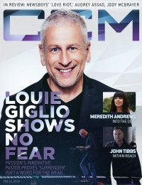

CMnexus: Contemporary Christian culture, music, and media.
|
|
Louie GiglioOn the cover|  | 15 February 2016
CCM Digital | Media coverage:- Mar 2004 in CCM "Something Old, Something New", by David Schrader
- Mar 2004 in Worship Leader "The Fine Art of Collaboration with Chris Tomlin"
- Mar 2006 in Worship Leader "Table Talk: How to Dismantle an Atomic Song", by Andrew Philip
- Apr 2006 in CCM "Standing Room Only: Indescribable Tour", by Andy Argyrakis
- Apr 2007 in Christianity Today "Passion Takes It Higher", by Collin Hansen
- Jan 2010 in CCM Digital "History in the Making", by Andrew Greer
- Jan 2011 in CCM Digital "Worship: Passion [City]", by Emily Hoernschemeyer
- Jan 2012 in Relevant "Accidental Movement", by Tyler Charles
- May 2012 in CCM Digital "Worship: Passion: Victory Is Won", by Emily Durbin
- Dec 2013 in CCM Digital "Tour Spotlight: Burning Lights Tour, Willow Creek Community Church, South Barrington, IL", by Andy Argyrakis
- Jan 2014 in Relevant "Louie Giglio's Passion", by Tyler Huckabee
- 1 Jun 2014 in CCM Digital "Passion: Changing the World One Arena at a Time", by Caroline Lusk
- 15 Feb 2016 in CCM Digital "Souls On Fire", by Caroline Lusk
Award Summary (Nominations / Wins)Dove Awards2008 Dove Awards- Song: "Amazing Grace (My Chains Are Gone)"
- Worship Song: "Amazing Grace (My Chains Are Gone)"
2009 Dove Awards- Song: "Amazing Grace (My Chains Are Gone)"
2010 Dove Awards- Song: "I Will Rise"
- Worship Song: "I Will Rise"
Regular columnsIn CCM: "The Final Word" Published articles:12 articles credited in CCM: 2006 - 2008.1 article credited in Charisma: 2011. |